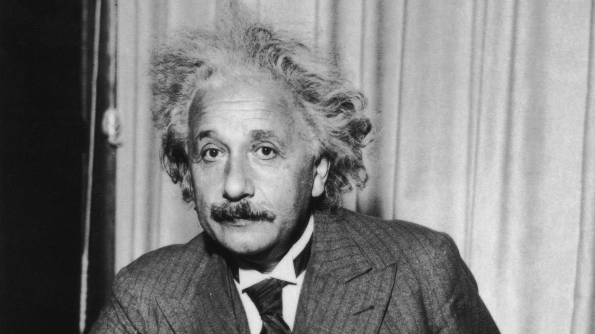

“The people who are crazy enough to think they can change the world are the ones who do.”

Biography
Einstein became deeply religious at age 12, even composing several songs in praise of God and chanting religious songs on the way to school. This began to change, however, after he read science books that contradicted his religious beliefs. This challenge to established authority left a deep and lasting impression. At the Luitpold Gymnasium, Einstein often felt out of place and victimized by a Prussian-style educational system that seemed to stifle originality and creativity. One teacher even told him that he would never amount to anything.
Yet another important influence on Einstein was a young medical student, Max Talmud (later Max Talmey), who often had dinner at the Einstein home. Talmud became an informal tutor, introducing Einstein to higher mathematics and philosophy. A pivotal turning point occurred when Einstein was 16 years old. Talmud had earlier introduced him to a children’s science series by Aaron Bernstein, Naturwissenschaftliche Volksbucher (1867–68; Popular Books on Physical Science), in which the author imagined riding alongside electricity that was traveling inside a telegraph wire. Einstein then asked himself the question that would dominate his thinking for the next 10 years: What would a light beam look like if you could run alongside it? If light were a wave, then the light beam should appear stationary, like a frozen wave. Even as a child, though, he knew that stationary light waves had never been seen, so there was a paradox. Einstein also wrote his first “scientific paper” at that time (“The Investigation of the State of Aether in Magnetic Fields”).